Introduction
In this document, we describe how to use the R library epimod. In details, epimod implements a new general modeling framework to study epidemiological systems, whose novelties and strengths are:
- the use of a graphical formalism to simplify the model creation phase;
- the automatic generation of the deterministic and stochastic process underlying the system under study;
- the implementation of an R package providing a friendly interface to access the analysis techniques implemented in the framework;
- a high level of portability and reproducibility granted by the containerization (Veiga Leprevost et al. 2017) of all analysis techniques implemented in the framework;
- a well-defined schema and related infrastructure to allow users to easily integrate their analysis workflow into the framework.
The effectiveness of this framework is showed through the well-known and simple SIR model.
How to start
Before starting the analysis we have to install (1) GreatSPN GUI, (2) docker, and (3) the R package devtools for installing EPIMOD. GreatSPN GUI, the graphical editor for drawing Petri Nets formalisms, is available online (link to install GreatSPN), and it can be installed following the steps showed therein. Then, the user must have docker installed on its computer for exploiting the epimod’s docker images (for more information on the docker installation see: link to install docker), and to have the authorization to execute docker commands reported in the command page of function install docker. To do this the following commands must be executed.
- Create the docker group.
$ sudo groupadd docker
- Add your user to the docker group.
$ sudo usermod -aG docker $USER
The R package devtools has to be installed to run epimod:
install.packages("devtools")
install.packages("fdatest")
library(devtools)
install_github("qBioTurin/epimod", dependencies=TRUE)
library(epimod)
Then, the following function must be used to download all the docker images used by epimod:
downloadContainers()
Something to know
All the epimod functions print the following information:
- Docker ID, that is the CONTAINER ID which is executed by the function;
- Docker exit status, if 0 then the execution completed with success, otherwise an error log file is saved in the working directory.
Cases of study
In this section, we show the steps necessary to model, study and analyze a simple case study. To this aim, we choose to study the diffusion of a disease following the SIR dynamics. We refer to (Keeling and Rohani 2011) for all the details.
SIR model
The S-I-R models the diffusion of an infection in a population assuming three possible states (or compartments) in which any individual in the the population may move. Specifically, (1) Susceptible, individuals unexposed to the disease, (2) Infected, individuals currently infected by the disease, and (3) Recovered, individuals which were successfully recovered from the infection. To consider the simplest case, we ignore the population demography (i.e., births and deaths of individuals are omitted), thus we consider only two possible events: the infection (passage from Susceptible to Infected), and the recovery (passage from Infected to Recovered). We are also assuming to neglect complex pattern of contacts, by considering a homogeneous mixing. From a mathematical point of view, the system behaviors can be investigated by exploiting the deterministic approach (Kurtz 1970) which approximates its dynamics through a system of ordinary differential equations (ODEs):
where:
- S, I, R are the number of susceptible, infected, and recovered individuals, respectively;
- β is the infection rate;
- N is the constant population size;
- γ is the recovery rate, which determines the mean infectious period.
Model Generation
The first step is the model construction. Starting with the GreatSPN editor tool it is possible to draw the model using the PN formalism and its generalizations. We recall that the Petri Nets are bipartite graphs in which we have two types of nodes, places and transitions. Graphically, places are represented as circles and those are the variables of our systems. On the other hand, transitions are depicted as rectangles and are the possible events happening in the system. Variables and events (i.e., places and transitions) are connected through arcs, showing what variable(s) is (are) affected by a specific event. For more details, we refer to (Marsan et al. 1995).
To define the rate of the transition there are different way that differentiate transitions into two groups.
Standard Transition
As represented in the figure, we add one place for each variable of the system (i.e., S, I, and R represent the susceptible, infected, and recovered individuals respectively), and one transition for each possible event (i.e., Infection and Recovery). Each transition is associated a negative exponential distribution which represents the firing rate of the transition, and its rate is expressed with the Mass Action law. The rate of the Mass Action can be written directly inside the GUI as shown in the figure. Finally, we save the PN model as a file with extension .PNPRO .
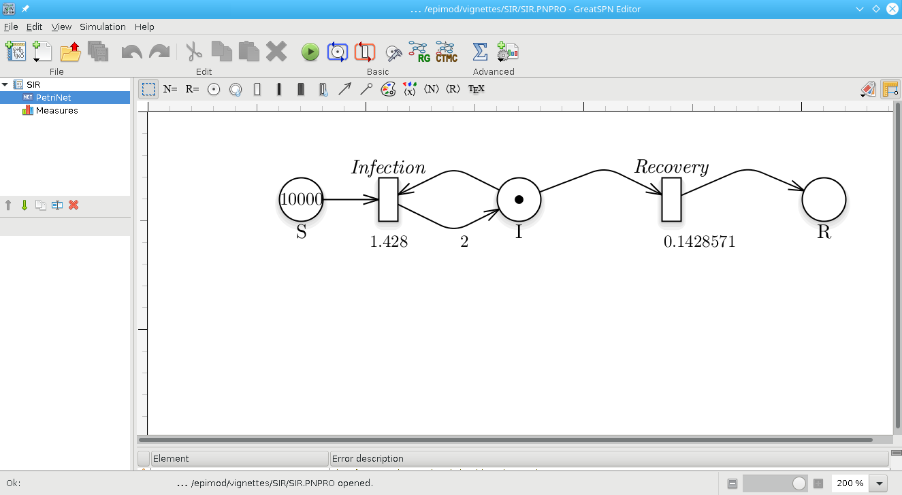
Petri Net representation of the SIR model.
Having constructed the model, the generation of both the stochastic (the Continuous Time Markov Chain) and deterministic (ODEs) processes underlying the model is implemented by the model.generation() function. This function takes as input the file generated by the graphical editor, in this case called SIR.PNPRO, and automatically derives the processes.
model.generation(net_fname = "./Net/SIR.PNPRO")
The binary file SIR.solver is generated in which the derived processes and the library used for their simulation are packaged.
More complex transition
There are other features to define the rate of a transition, apart of the Mass Action.
It is possible to write directly in the GUI simple expression so that the rate of the exponential distribution will be defined by the general function. These will be general transitions (Pernice et al. 2019). The functionalities allow one to read a constant from a file where the numbers are written in list or matrix form and to directly use the marking of the places. Specifically, the available features are:
-
#: This function allows one to use the marking value of a place.
#S * #I * #R -
FromList: This function allows to extract a single constant from a list of real numbers separated by a newline and written on a file. It takes as parameters 1) a string which represents the name of the file and 2) an integer representing the index of the position of the constant in the file.
SIRFile: 3 5 16 8 9 1 FromList["SIRFile", 1] = 5 -
FromTable: This function allows to extract a single constant from a real number matrix written on a file where each number is separated by a comma and each row is separated by a newline. It takes as parameters 1) a string which represents the name of the file 2) an integer, the index of the row where the number is located, 3) a second integer that is the index of the column.
SIRFile: 3,9,13 5,56,7 16,0,1 8,90,23 1,44,88 FromTable["SIRFile", 3,2] = 23 -
FromTimeTable: This function is similar to FromTable, but it works on a file which contains a numeric matrix where the first column symbolize a list of time steps as a list of numbers sorting in ascending order. The function takes as parameters 1) a string which represents the name of the file 2) An integer representing the index of the column of the matrix. The index of the row will be automatically calculated using the time step of the current execution. The exact value of time may not be present in the first column so the index of the row is selected as the position of the first value lower.
SIRFile: 3,9,13 5,56,7 8,0,1 16,90,23 33,44,88 FromTimeTable["SIRFile", 1] If the time of the execution has value 1 then FromTimeTable["SIRFile", 1] = 13 If the time of the execution has value 10 then FromTimeTable["SIRFile",1] = 1 If the time of the execution has value 50 then FromTimeTable["SIRFile",1] = 88
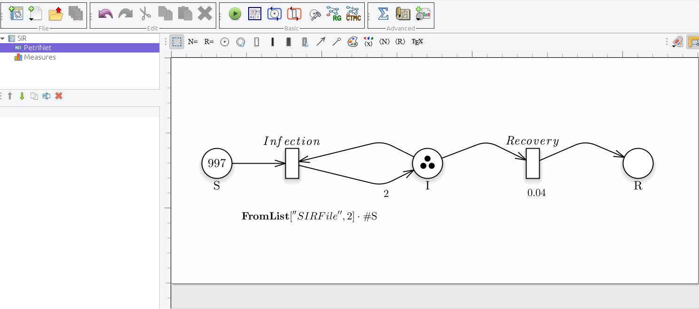
Petri Net with Infection's rate defined with FromList and the marking of the place S.
The file is written inside the docker and the name and the values inside it are defined and written using the .csv in input and the R functions. This will be better explained in the next sessions.
Notice that model.generation() might take as input parameter a C++ file defining the functions characterizing the behavior of general transitions, namely transitions_fname. For instance, if we want to define the transition Infection with an external function then we have to set as the rate of the transition the instruction Call. This function allows one to call an external function written by the user on a file. It takes as parameters:
- A string which is the name of the function.
- A set of real numbers; they will be passed to the function as its parameters. in the same order they are written, and the user can write as many values he needs
As showed in figure, where the delay (i.e., the rate) is set as Call[“InfectionFunction”]
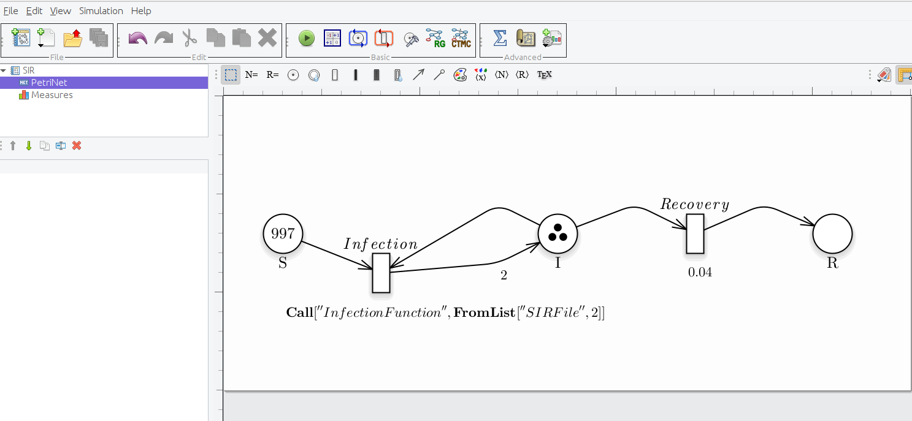
Petri Net representation of the SIR model, modelling the Infection transition with an external function and the additional parameter as FromList.
Then, we have to properly define a C++ function implementing the specific behavior of the transition and save it, for instance in a file named transition.cpp, which has to be structured as follows:
double InfectionFunction(double *Value,
map <string,int>& NumTrans,
map <string,int>& NumPlaces,
const vector<string> & NameTrans,
const struct InfTr* Trans,
const int T,
const double& time,
double Infection_rate)
{
// Definition of the function exploited to calculate the rate,
// in this case for simplicity we define it through the Mass Action law
double intensity = 1.0;
for (unsigned int k=0; k<Trans[T].InPlaces.size(); k++)
{
intensity *= pow(Value[Trans[T].InPlaces[k].Id],Trans[T].InPlaces[k].Card);
}
double rate = Infection_rate * intensity;
return(rate);
}
where the fixed input parameters are:
- double *Value: marking of the Petri Net at time time;
- map <string,int>& NumTrans: association between the transition name and the corresponding index of the NameTrans vector;
- map <string,int>& NumPlaces: association between the place’s name and the corresponding index of the Value vector;
- **const vector
& NameTrans**: transition names; - const struct InfTr* Trans: array of InfTr structures (implemented in GreatSPN) which is indexed using the transition index. The structure InfTr has the following fields: (1) InPlaces: the input places to a transition, which is characterized by the input place index position in the Value vector (Trans[T].InPlaces[k].Id) and the arc (linking the k place with the T transition) multiplicity (Trans[T].InPlaces[k].Card). (2) ….
- const int T: index of the firing transition;
- const double& time : time.
- Any additional parameters must be added at the end of these standards, in the same order as written within the call (in the example the double Infection_rate)
Notice that the function name has to correspond to the function name passed inside the Call, in this case InfectionFunction.
Finally, the process can be derived by the model.generation() function as follow.
model.generation(net_fname = "./Net/SIR_generalFN.PNPRO",
transitions_fname = "./Cpp/transition.cpp")
General transition
With the new expansion of the GreatMod modeling framework it is now possible to associate the firing delay of the transitions not only to the exponential distribution, but also to general distribution. An example can be seen in the image below.
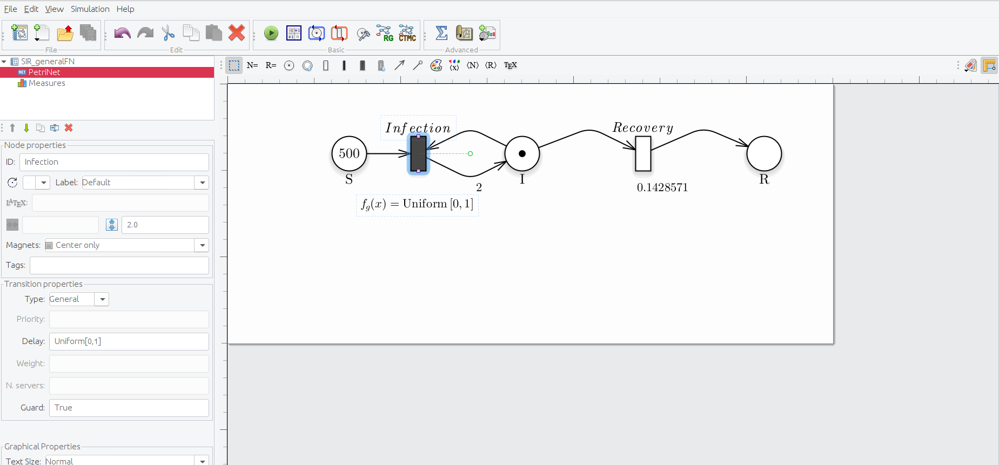
Petri Net representation of the SIR model, modelling the Infection transition as a general transition using a general distribution
To define a transition as general simply place it in the gui and select the type general from the drop-down menu. Now you must associate a general distribution from the ones avaiable in the tool, that are:
- Uniform (representated inside the GUI like Uniform[a,b])
- Binomial (representated inside the GUI like Binomial[a,b])
- Gamma (representated inside the GUI like Earlang[a,b])
- Dirac (representated inside the GUI like I[a])
- Truncated exponential (representated inside the GUI like TruncatedExp[a])
The only solver that can handle, for now, the non exponential general transition is the Stochastic Simulation Alghoritm (SSA), using the model analysis as follows (having generated the proper solver file):
model.analysis(solver_fname = "./SIR_generalFN.solver",
solver_type = "SSA",
n_run = 500,
parallel_processors = 2,
f_time = 7*10, # weeks
s_time = 1
)
Sensitivity analysis
The second step is represented by the sensitivity analysis, in which the deterministic process is solved several times varying the values of the unknown parameters to identify which are the sensitive ones (i.e., those that have a greater effect on the model behavior), by exploiting the Pearson Ranking Correlation Coefficients (PRCCs). This may simplify the calibration step reducing (1) the number of variables to be estimated and (2) the search space associated with each estimated parameter. With this purpose, the function model.sensitivity() calculates the PRCCs, and, given a reference dataset and a distance measure, it ranks the simulations according to the distance of each solution with respect to the reference one.
In details, the function model.sensitivity() takes in input
- solver_fname: the file generated by the model.generation function, that is SIR.solver;
- n_config: the total number of samples to be performed, for instance 200;
- f_time: the final solution time, for instance 10 weeks (70 days);
- s_time: the time step defining the frequency at which explicit estimates for the system values are desired, in this case it could be set to 1 day;
- parameters_fname: a textual file in which the parameters to be studied are listed associated with their range of variability. This file is defined by three mandatory columns (which must separated using ;): (1) a tag representing the parameter type: i for the complete initial marking (or condition), m for the initial marking of a specific place, c for a single constant rate, and g for a rate associated with general transitions (Pernice et al. 2019) (the user must define a file name coherently with the one used in the general transitions file); (2) the name of the transition which is varying (this must correspond to the name used in the PN draw-in GreatSPN editor), if the complete initial marking is considered (i.e., with tag i) then by default the name init is used; (3) the function used for sampling the value of the variable considered, it could be either an R function or a user-defined function (in this case it has to be implemented into the R script passed through the functions_fname input parameter). Let us note that the output of this function must have a size equal to the length of the varying parameter, that is 1 when tags m, c or g are used, and the size of the marking (number of places) when i is used. The remaining columns represent the input parameters needed by the functions defined in the third column. An example is given by the file Functions_list.csv, where we decided to vary the rates of the Recovery and Infection transitions by using the R function which generates values following the uniform probability distribution on the interval from min to max. We set n=1 because we must generate one value for each sample.
#> Tag Name Function Parameter1 Parameter2 Parameter3
#> 1 c Recovery runif n=1 min = 0.1 max=1
#> 2 c Infection runif n=1 min = 0.001 max=0.01
Another example might be FunctionsSensitivity_list.csv, where we decide to vary the initial marking using the following function init_generation defined in the R script Functions.R (see functions_fname parameter).
Sensitivity_list<-read.csv("Input/FunctionsSensitivity_list.csv", header=FALSE,sep=";")
colnames(Sensitivity_list) <- c("Tag","Name","Function","Parameter1","Parameter2","Parameter3")
Sensitivity_list
#> Tag Name Function Parameter1 Parameter2 Parameter3
#> 1 m S 100
#> 2 m I 1
#> 3 m R 0
#> 4 c Recovery runif n=1 min = 0 max=0.1
#> 5 c Infection runif n=1 min = 0 max=0.1
- functions_fname: an R file storing: 1) the user-defined functions to generate instances of the parameters summarized in the parameters_fname file, and 2) the functions to compute the distance (or error) between the model output and the reference dataset itself (see reference_data and distance_measure), to obtain the place or a combination of places from which the PRCCs over the time have to be calculated (see target_value). An example is given by FunctionSensitivity.R, where three functions are implemented: init_generation, target, and mse. init_generation introduced in FunctionsSensitivity_list.csv file is defined to sample the initial number of susceptible between min_init and max_init, and fixing the number of infected and recovered to 1 and 0 respectively.
init_generation<-function(min_init , max_init, n)
{
S=runif(n=1,min=min_init,max=max_init)
# It returns a vector of length equal to 3 since the marking is
# defined by the three places: S, I, and R.
return( c(S, 1,0) )
}
Differently, target is the function to obtain the place or a combination of places from which the PRCCs over time have to be calculated. In details, the function takes in input a data.frame, namely output, defined by several columns equal to the number of places plus one corresponding to the time, and the number of rows equal to the number of time steps defined previously. Finally, it must return the column (or a combination of columns) corresponding to the place (or combination of places) for which the PRCCs have to be calculated for each time step. In the example, the PRCCs are calculated with respect to place I (infected individuals):
target<-function(output)
{
I <- output[,"I"]
return(I)
}
Finally, the function mse defines the distance measure (based on the squared error distance) between the reference data and the simulations; it takes in input only the reference data (defined in reference_data.csv), and the simulation output with the following structure:
#> Time S I R
#> 1 1 1000.0000 1.000000 0.00000000
#> 2 2 999.3876 1.557168 0.05518834
#> 3 3 998.4350 2.423860 0.14110951
#> 4 4 996.9545 3.770735 0.27481357
#> 5 5 994.6566 5.860729 0.48271964
#> 6 6 991.0980 9.096360 0.80563460
#> 7 7 985.6060 14.087723 1.30628156
Thus, an example of this function can be as follows:
mse<-function(reference, output)
{
reference[1,] -> times_ref
reference[3,] -> infect_ref
# We will consider the same time points
Infect <- output[which(output$Time %in% times_ref),"I"]
infect_ref <- infect_ref[which( times_ref %in% output$Time)]
diff.Infect <- 1/length(times_ref)*sum(( Infect - infect_ref )^2 )
return(diff.Infect)
}
- target_value: the function name to exploit for obtaining the PRCCs, which is implemented in functions_fname;
- reference_data: a csv file storing the data to be compared with the simulations’ result. In reference_data.csv we report the SIR evolution starting with 100 susceptible, one infected and zero recovered, with recovery and infection rates equal to 0.04 and 0.004 respectively. Notice that the reference_data’s rows must correspond to the time serie variables (in our example: Susceptible, Infected and Recovered), and so the columns with the corresponding values at a specific time.
#> Time I NA NA
#> TimeStep1 0 100.00000 1.000000 0.00000000
#> TimeStep2 1 99.51983 1.432036 0.04813259
#> TimeStep3 2 98.83701 2.046008 0.11698044
#> TimeStep4 3 97.87113 2.913683 0.21518618
#> TimeStep5 4 96.51503 4.130258 0.35471543
#> TimeStep6 5 94.63085 5.817282 0.55186756
#> TimeStep7 6 92.05065 8.121037 0.82831385
- distance_measure: the distance function name to exploit for ranking the simulations, which is implemented in functions_fname;
Let us observe that: (i) model.sensitivity exploits also the parallel processing capabilities, and (ii) if the user is not interested in the ranking calculation then the distance_measure and reference_data are not necessary and can be omitted.
## Simple version where only the transition rates vary.
sensitivity<-model.sensitivity(n_config = 200,
solver_fname = "Net/SIR.solver",
parameters_fname = "Input/FunctionsSensitivity_list.csv",
reference_data = "Input/reference_data.csv",
functions_fname = "Rfunction/FunctionSensitivity.R",
distance_measure = "mse" ,
target_value = "target" ,
i_time = 0,
f_time = 7*10, # weeks
s_time = 1, # days
parallel_processors = 2
) t] Setting up environment" #> [1] "[experiment.env_setup] Done setting up environment"
#> docker run --privileged=true --user=501:20 --cidfile=dockerID --volume /Users/simonepernice/Desktop/GIT/Modelli_GreatMod/SIR:/home/docker/data -d qbioturin/epimod-sensitivity:1.0.0 Rscript /usr/local/lib/R/site-library/epimod/R_scripts/sensitivity.mngr.R /home/docker/data/SIR_sensitivity/params_SIR-sensitivity.RDS
#>
#>
#> Docker ID is:
#> 4599165d1b85
#> .....
#>
#>
#> Docker exit status: 0
Hence, considering the SIR model we can run the model.sensitivity varying the Infection and Recovery transitions rates in order to characterized their effect on the number of infected individuals.
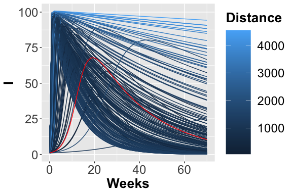
The 200 trajectories considering the I place obtained from different parameters configurations.
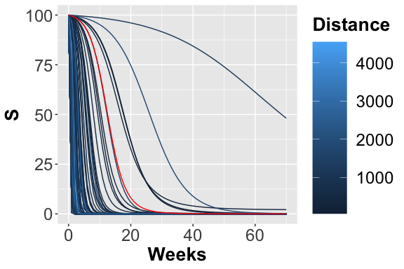
The 200 trajectories considering the S place obtained from different parameters configurations.
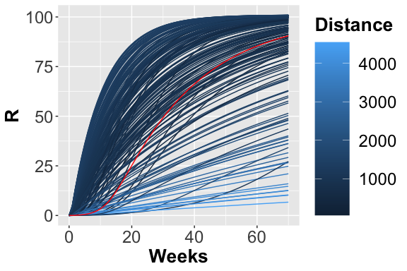
The 200 trajectories considering the R place obtained from different parameters configuration.
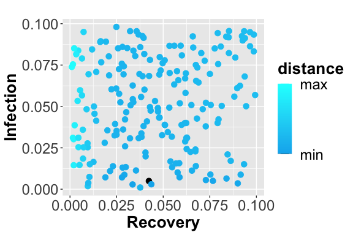
Scatter plot showing the squared error between the reference data and simulated number of infected. The dark blue points represent the parameters configuration with minimum error.
From the figures, , and , it is possible to observe the different trajectories obtained by solving the system of ODEs, represented by eq. , with different parameter configurations, sampled by exploiting the function passed through parameters_fname. In the figure the distance values, obtained using the measure definition described before, are plotted varying the Recovery parameter (on the x-axis) and Infection parameter (on the y-axis). Each point is colored according to a nonlinear gradient function starting from color dark blue (i.e., lower value) and moving to color light blue (i.e., higher values). From this plot, we can observe that lower squared errors are obtained when Recovery is around 0.025 and Infection around 0.002, thus we can reduce the search space associated with the two parameters around these two values.
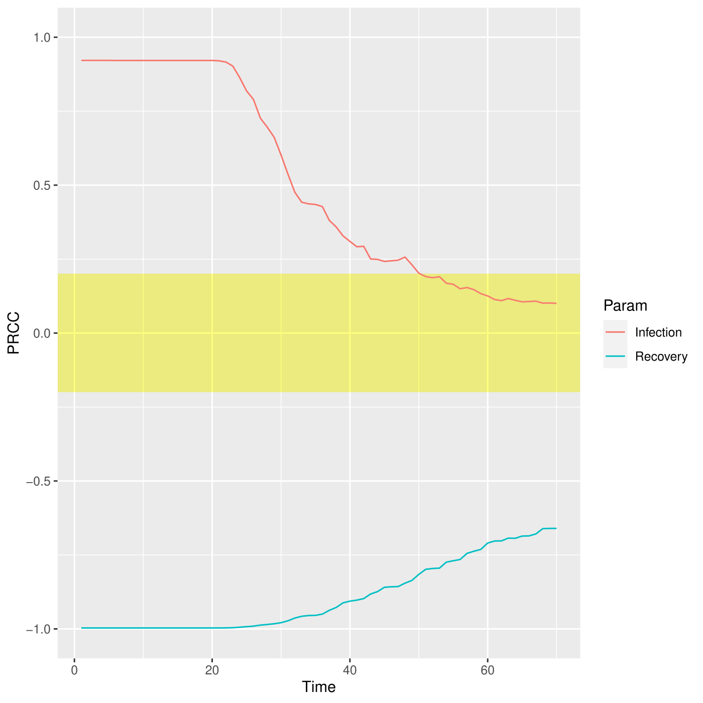
PRCC for the I place over time.
The PRCCs values for these two parameters, depicted in figure , with respect the number of infections over the entire simulated period are both meaningful, especially in the first part of the simulation, corresponding to the transient part where the parameters affect mostly the output. Differently, this effect decreases after the fifth week where all the deterministic trajectories obtained with different parameters configurations converge to the same states, see figure.
Other possible examples of how to use this function are reported hereafter:
## Version where only the PRCC is calculated
sensitivity<-model.sensitivity(n_config = 100,
solver_fname = "Net/SIR.solver",
parameters_fname = "Input/Functions_list.csv",
functions_fname = "Rfunction/FunctionSensitivity.R",
target_value = "target" ,
parallel_processors = 1,
f_time = 7*10, # weeks
s_time = 1 # days
)
## Version where only the ranking is calculated
sensitivity<-model.sensitivity(n_config = 100,
solver_fname = "Net/SIR.solver",
parameters_fname = "Input/Functions_list.csv",
functions_fname = "Rfunction/FunctionSensitivity.R",
reference_data = "Input/reference_data.csv",
distance_measure = "mse" ,
parallel_processors = 1,
f_time = 7*10, # weeks
s_time = 1 # days
)
## Complete and more complex version where all the parameters for calculating
## the PRCC and the ranking are considered, and the initial conditions vary too.
sensitivity<-model.sensitivity(n_config = 100,
solver_fname = "Net/SIR.solver",
parameters_fname = "Input/Functions_list.csv",
reference_data = "Input/reference_data.csv",
functions_fname = "Rfunction/FunctionSensitivity.R",
distance_measure = "mse" ,
target_value = "target" ,
f_time = 7*10, # weeks
s_time = 1, # days
parallel_processors = 2
)
Sensitivity analysis with general transitions
Let us consider the example of the SIR model where the Infection transition is defined as general transition, with the purpose to varying the Infection_rate constant of the corresponding Mass Action law. Generally, in order to define the rate of a transition it is required to provide some inputs and, hence, we need to define an R function (in the functions_fname file) which provides all the input parameters necessary to the C++ function.
Therefore, we have to modify the Functions_list csv as follows in order to associate with the general transition Infection the R function, InfectionValuesGeneration, which generates the values exploited by the respective function defined in the C++ file, called trasition.cpp.
#> Tag Name Function Parameter1 Parameter2 Parameter3
#> 1 c Recovery runif n=1 min = 0 max=1
#> 2 g InfectionFile InfectionValuesGeneration min = 0 max=1
Successively, we have to define the InfectionValuesGeneration in Functions.R.
InfectionValuesGeneration<-function(min, max)
{
rate_value <- runif(n=1, min = min, max = max)
return(rate_value)
}
Notice that the value (or values) generated are temporarily saved in a file named as the corresponding name in the Functions_list, in this case InfectionFile.
Calibration analysis
This phase aims to optimize the fit of the simulated behavior to the reference data by adjusting the parameters associated with both Recovery and Infection transitions. This step is performed by the function model.calibration(), characterized by the solution of an optimization problem in which the distance between the simulated data and the reference data is minimized, according to the definition of distance provided by the user (distance_fname).
model.calibration(parameters_fname = "Input/Functions_list_Calibration.csv",
functions_fname = "Rfunction/FunctionCalibration.R",
solver_fname = "Net/SIR.solver",
reference_data = "Input/reference_data.csv",
distance_measure = "mse" ,
f_time = 7*10, # weeks
s_time = 1, # days
# Vectors to control the optimization
ini_v = c(0.02,0.001),
lb_v = c(0.01, 0.0001),
ub_v = c(0.05, 0.002),
max.time = 2
)
#> [1] "[experiment.env_setup] Setting up environment"
#> [1] "[experiment.env_setup] Done setting up environment"
#> docker run --privileged=true --user=501:20 --cidfile=dockerID --volume /Users/simonepernice/Desktop/GIT/Modelli_GreatMod/SIR:/home/docker/data -d qbioturin/epimod-calibration:1.0.0 Rscript /usr/local/lib/R/site-library/epimod/R_scripts/calibration.mngr.R /home/docker/data/SIR_calibration/params_SIR-calibration.RDS
#>
#>
#> Docker ID is:
#> 090eae087a7d
#> .......
#>
#>
#> Docker exit status: 0
#> [1] 0
- solver_fname: the file generated by the model.generation function, that is SIR.solver;
- parameters_fname: a textual file in which the parameters to be studied are listed associated with their range of variability. This file is defined by three mandatory columns (which must separated using ;): (1) a tag representing the parameter type: i for the complete initial marking (or condition), m for the initial marking of a specific place, c for a single constant rate, and g for a rate associated with general transitions (Pernice et al. 2019) (the user must define a file name coherently with the one used in the general transitions file); (2) the name of the transition which is varying (this must correspond to the name used in the PN draw-in GreatSPN editor), if the complete initial marking is considered (i.e., with tag i) then by default the name init is used; (3) the function used for sampling the value of the variable considered, it could be either an R function or a user-defined function (in this case it has to be implemented into the R script passed through the functions_fname input parameter). Let us note that the output of this function must have a size equal to the length of the varying parameter, that is 1 when tags m, c or g are used, and the size of the marking (number of places) when i is used. The remaining columns represent the input parameters needed by the functions defined in the third column. An example is given by the file Functions_list_Calibration.csv:
#> Tag Name Function or fixed-parameter NA
#> 1 m S 100 NA
#> 2 m I 1 NA
#> 3 m R 0 NA
#> 4 c Recovery fun.recovery NA
#> 5 c Infection fun.infection NA
where the rates of the Recovery and Infection transitions can be calibrated by using the R functions stored in the R script functions_fname; 3. functions_fname: an R file storing: 1) the user-defined functions to generate instances of the parameters summarized in the parameters_fname file, and 2) the function to compute the distance (or error) between the model output and the reference dataset itself. An example is given by FunctionCalibration.R, where three functions are implemented: fun.recovery, fun.infection, and mse. The first two are introduced in Functions_list_Calibration.csv file, and they are defined in order to return the value (or a linear transformation) of the vector of the unknown parameters generated from the optimization algorithm, namely optim_v, whose size is equal to the number of parameters in parameters_fname. Let us note that the output of these functions must return a value for each input parameter. For instance, to calibrate the transition rates associated with Recovery and Infection, the functions recovery and infection have to be defined, returning just the corresponding value from the vector optim_v, where optim_v[1] = “Recovery rate”, optim_v[2] = “Infection rate”, since we do not want to change the vector generated from the optimization algorithm. The order of values in optim_v is given by the order of the parameters in parameters_fname. Finally, the function mse defines the distance measure (based on the squared error distance) between the reference data and the simulations; it takes in input only the reference data (defined in reference_data.csv), and the simulation output with the following structure:
#> Time S I R
#> 1 1 1000.0000 1.000000 0.00000000
#> 2 2 999.3876 1.557168 0.05518834
#> 3 3 998.4350 2.423860 0.14110951
#> 4 4 996.9545 3.770735 0.27481357
#> 5 5 994.6566 5.860729 0.48271964
#> 6 6 991.0980 9.096360 0.80563460
#> 7 7 985.6060 14.087723 1.30628156
Thus, these three functions are defined as follows:
fun.recovery<-function(optim_v)
{
return(optim_v[1])
}
fun.infection<-function(optim_v)
{
return(optim_v[2])
}
mse<-function(reference, output)
{
reference[1,] -> times_ref
reference[3,] -> infect_ref
# We will consider the same time points
Infect <- output[which(output$Time %in% times_ref),"I"]
infect_ref <- infect_ref[which( times_ref %in% output$Time)]
diff.Infect <- 1/length(times_ref)*sum(( Infect - infect_ref )^2 )
return(diff.Infect)
}
- reference_data: a csv file storing the data to be compared with the simulations’ result. In reference_data.csv we report the SIR evolution starting with 100 susceptible, one infected and zero recovered, with a recovery and infection rates equal to 0.04 and 0.004 respectively. Notice that the reference_data’s rows must correspond to the time serie variables (in our example: Susceptible, Infected and Recovered), and so the columns with the corresponding values at a specific time.
#> Time I NA NA
#> TimeStep1 0 100.00000 1.000000 0.00000000
#> TimeStep2 1 99.51983 1.432036 0.04813259
#> TimeStep3 2 98.83701 2.046008 0.11698044
#> TimeStep4 3 97.87113 2.913683 0.21518618
#> TimeStep5 4 96.51503 4.130258 0.35471543
#> TimeStep6 5 94.63085 5.817282 0.55186756
#> TimeStep7 6 92.05065 8.121037 0.82831385
- distance_measure: the distance function name to exploit for ranking the simulations, which is implemented in functions_fname;
- f_time: the final solution time, for instance 10 weeks (70 days);
- s_time: the time step defining the frequency at which explicit estimates for the system values are desired, in this case, it could be set to 1 day;
- ini_v: Initial values for the parameters to be optimized.
- lb_v, ub_v: Vectors with length equal to the number of parameters which are varying. Lower/Upper bounds for each parameter.
- max_time: maximum running time.
# How to generate the plots
source("Rfunction/CalibrationPlot.R")
plots <- calibration.plot(solverName_path = "./SIR_calibration/SIR-calibration-1.trace",
reference_path ="reference_data.csv")
plots$plS
plots$plI
plots$plR
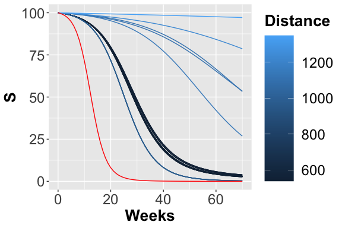
Trajectories considering the S place.
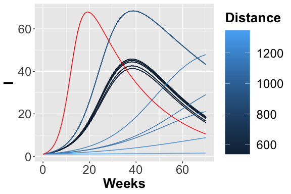
Trajectories considering the I place.
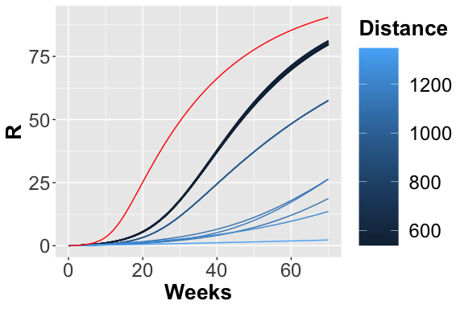
Trajectories considering the R place.
In figures , and the trajectories with color depending on the squared error w.r.t. reference trend are plotted. In this case, fixing a maximum number of objective function calls, we obtain the following optimal value for the two parameters:
#> [1] 0.04462931 0.00200000
Calibration analysis with general transitions
Starting from the changes made in the Sensitivity Analysis phase, we have to add the possibility to save the value passed by the optmization algorithm instead of the value generated by the function defined by the user. By default in the calibration phase, the vector x of the unknown parameters, in this case the Recovery and Infection rates, is passed to the R functions defined in Functions.R. Therefore, we have to modify the InfectionValuesGeneration in order to return the value contained in x, i.e. the second one ( the order is given by the order of the parameters in parameters_fname). Notice that in the Sensitivity Analisys phase, the vector x is not passed in input so we can generalized the InfectionValuesGeneration as follow in order to use it in both the analysis phases.
InfectionValuesGeneration<-function(optim_v= NULL)
{
rate_value <- optim_v[2]
return(rate_value)
}
Model Analysis
Finally, a possible step is the model analysis, where the corresponding function model.analysis() executes and tests the behavior of the developed model. Furthermore, by changing the input parameters, it is possible to perform a what-if analysis or forecasting the evolution of the diffusion process.
model.analysis(solver_fname = "SIR.solver",
i_time = 1,
f_time = 100, # days
s_time = 1,
parameters_fname = "Functions_list_ModelAnalysis.csv"
)
- solver_fname: the file generated by the model.generation function, that is SIR.solver;
- i_time: the initial solution time, for instance day 1;
- f_time: the final solution time, for instance 100 days;
- s_time: the time step defining the frequency at which explicit estimates for the system values are desired, in this case it could be set to 1 day.
- parameters_fname: a textual file in which the parameters to be studied are listed associated with their range of variability. This file is defined by three mandatory columns (which must separated using ;): (1) a tag representing the parameter type: i for the complete initial marking (or condition), m for the initial marking of a specific place, c for a single constant rate, and g for a rate associated with general transitions (Pernice et al. 2019) (the user must define a file name coherently with the one used in the general transitions file); (2) the name of the transition which is varying (this must correspond to the name used in the PN draw-in GreatSPN editor), if the complete initial marking is considered (i.e., with tag i) then by default the name init is used; (3) the function used for sampling the value of the variable considered, it could be either an R function or a user-defined function (in this case it has to be implemented into the R script passed through the functions_fname input parameter). Let us note that the output of this function must have size equal to the length of the varying parameter, that is 1 when tags m, c or g are used, and the size of the marking (number of places) when i is used. The remaining columns represent the input parameters needed by the functions defined in the third column.
Functions_list_ModelAnalysis<-read.csv("Input/Functions_list_ModelAnalysis.csv", header=FALSE,sep=";")
colnames(Functions_list_ModelAnalysis) <- c("Tag","Name","Function or fixed parameter")
Functions_list_ModelAnalysis
#> Tag Name Function or fixed parameter NA
#> 1 m S 1e+02 NA
#> 2 m I 1e+00 NA
#> 3 m R 0e+00 NA
#> 4 c Recovery 4e-02 NA
#> 5 c Infection 4e-03 NA
## How to generate the plots
source("Rfunction/ModelAnalysisPlot.R")
AnalysisPlot = ModelAnalysisPlot(trace_path = "./SIR_analysis/SIR-analysys-1.trace",
Stoch = F,
print=F)
AnalysisPlot$plAll
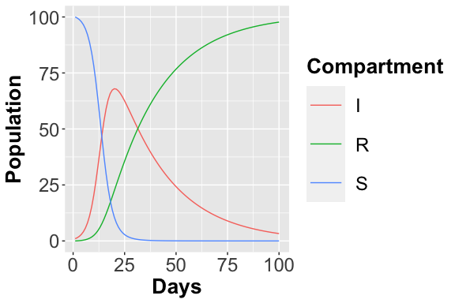
<p class="caption"> Deterministic Trajectory considering all places </p>It is possible also to simulate the stochastic behavior of the system exploiting the Gillespie algorithm, namely SSA, which is an exact stochastic method widely used to simulate chemical systems whose behavior can be described by the Master equations.
model.analysis(solver_fname = "SIR.solver",
parameters_fname = "Functions_list_ModelAnalysis.csv",
solver_type = "SSA",
n_run = 500,
parallel_processors = 2,
i_time = 1,
f_time = 100, # days
s_time = 1
)
-
solver_type: type of solver to use;
-
n_run: number of stochastic simulations to run.
-
solver_type: type of solver to use;
-
n_run: number of stochastic simulations to run.
## How to generate the plots
source("Rfunction/ModelAnalysisPlot.R")
AnalysisPlot = ModelAnalysisPlot(trace_path = "./SIR_analysis/SIR-analysis-1.trace",
Stoch = T)
AnalysisPlot$plAll
AnalysisPlot$plAllMean
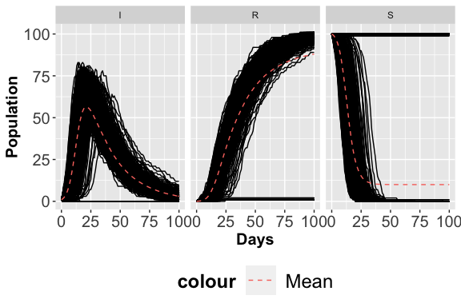
<p class="caption"> Stochastic Trajectories considering the S place. </p>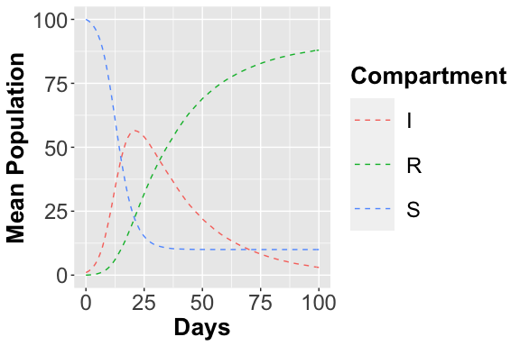
<p class="caption"> Stochastic Trajectories considering the I place. </p>What-if analysis
It is possible to change the place marking directly from the parameters_fname:
Functions_list_ModelAnalysis<-read.csv("Input/Functions_list_ModelAnalysis2.csv", header=FALSE,sep=";")
colnames(Functions_list_ModelAnalysis) <- c("Tag","Name","Function or fixed parameter")
Functions_list_ModelAnalysis
#> Tag Name Function or fixed parameter NA
#> 1 m S 1e+02 NA
#> 2 m I 5e+00 NA
#> 3 m R 0e+00 NA
#> 4 c Recovery 4e-02 NA
#> 5 c Infection 4e-03 NA
References
Keeling, Matt J, and Pejman Rohani. 2011. Modeling Infectious Diseases in Humans and Animals. Princeton University Press.
Kurtz, T. G. 1970. “Solutions of Ordinary Differential Equations as Limits of Pure Jump Markov Processes.” J. Appl. Probab. 1 (7): 49–58.
Marsan, M. Ajmone, G. Balbo, G. Conte, S. Donatelli, and G. Franceschinis. 1995. Modelling with Generalized Stochastic Petri Nets. New York, NY, USA: J. Wiley.
Pernice, S., M. Pennisi, G. Romano, A. Maglione, S. Cutrupi, F. Pappalardo, G. Balbo, M. Beccuti, F. Cordero, and R. A. Calogero. 2019. “A Computational Approach Based on the Colored Petri Net Formalism for Studying Multiple Sclerosis.” BMC Bioinformatics.
Veiga Leprevost, Felipe da, Björn A Grüning, Saulo Alves Aflitos, Hannes L Röst, Julian Uszkoreit, Harald Barsnes, Marc Vaudel, et al. 2017. “BioContainers: an open-source and community-driven framework for software standardization.” Bioinformatics 33 (16): 2580–82.